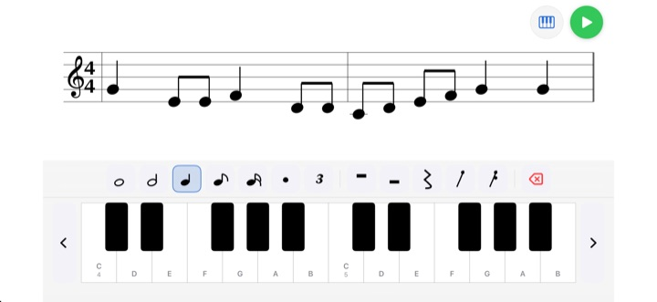
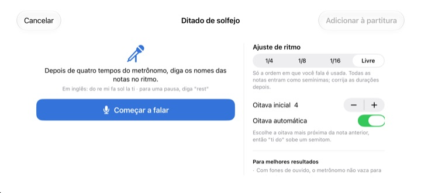
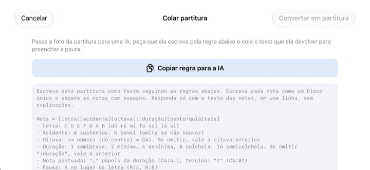

Pare de contar de cabeça.
Ouça.
Copie para a pauta os dois compassos que travam você e aperte Tocar. Depois de um compasso de contagem, o StaffSinger toca tudo junto com o metrônomo, com o ritmo e a altura exatos.
Todos os recursos são grátis. Para iPhone e iPad.

Escreva algumas notas e ouça
Mantenha pressionada a pauta, deslize para cima ou para baixo para mudar a altura e solte para colocar a nota. Aperte Tocar para ouvir um compasso de contagem e depois as notas. Aumente o volume, a página toca som.
Perdeu a conta no meio do compasso de novo?
Uma colcheia pontuada, depois uma semicolcheia e logo em seguida uma tercina, e bater o ritmo no joelho já não dá conta. Muitas vezes também não tem piano por perto, como na noite antes do ensaio. Copie esses dois compassos no StaffSinger e ele toca exatamente como está escrito.
Ritmo e altura exatos
Depois de um compasso de contagem, a música toca no clique do metrônomo e a nota que está soando acende em laranja. Ajuste o andamento entre 40 e 200 BPM e escolha 4/4, 3/4, 2/4, 6/8, 2/2 ou 3/8.
Empilhe notas no mesmo tempo e elas soam juntas como acorde, e escreva em até três vozes. Claves de sol, de dó e de fá e armaduras de clave estão todas lá.

Cante os nomes, ganhe as notas
Depois de quatro cliques do metrônomo, diga do re mi em voz alta, no tempo, e elas vão para a pauta. Falando bem no tempo, o ritmo também é registrado, em semínimas, colcheias ou semicolcheias. Diga rest para uma pausa.
Os nomes são falados em inglês: do re mi fa sol la ti, com ti no lugar de si. O reconhecimento de voz acontece no seu dispositivo e nada é guardado.

Entregue a foto a uma IA e cole o resultado
Toque em Copiar regra para a IA, entregue a regra a uma IA junto com uma foto da partitura e cole o que ela escrever. A pauta se preenche. O formato está na tabela abaixo.
Você também pode fotografar a página impressa e deixá-la na tela enquanto copia à mão.

Comece em três passos
- 1
Escolha os compassos difíceis
O app abre com uma pauta vazia de dois compassos.
- 2
Escreva as notas
Pressione a pauta ou use as teclas do piano.
- 3
Aperte Tocar
Uma contagem e depois a reprodução com metrônomo.
Formato de texto para colar
- C4:4
- dó na oitava 4, semínima (o dó central é C4)
- D:8
- Se omitir a oitava, vale a anterior
- F#4:8 · Bb4:4
- # para sustenido, b para bemol
- E4
- Se omitir :duração, vale a duração anterior
- :1 · :2 · :4 · :8 · :16
- semibreve, mínima, semínima, colcheia, semicolcheia
- C4:4.
- nota pontuada
- C4:8t
- tercina
- R:4 · R:8
- pausas
O botão Copiar regra para a IA copia exatamente estas instruções. As letras C D E F G A B correspondem a dó ré mi fá sol lá si. Separe as notas com espaços.
Tudo é grátis
Grátis
- Escrita na pauta e teclado de piano de duas oitavas
- Reprodução com contagem e metrônomo
- Acordes e três vozes
- Armaduras de clave e três claves
- Ditado de solfejo
- Colar como texto e fotos de referência
Apoie o desenvolvedor
- Mande uma pequena gorjeta pelos Ajustes
- Gorjetas não desbloqueiam nada a mais
Não é assinatura. Cada gorjeta é um pagamento único.
Sem anúncios e sem precisar de conta.
Perguntas
Como adiciono notas?
Primeiro escolha uma duração na barra de ferramentas e depois pressione a pauta na altura que quiser. Enquanto você segura, ouve a nota, e ela é adicionada quando você solta. Toque no botão do teclado para inserir notas em um piano de duas oitavas.
Como faço um acorde?
Ative o botão Acorde na barra de ferramentas e adicione notas. Elas se empilham sobre a nota selecionada e soam juntas.
Como corrijo uma nota?
Arraste a nota para cima ou para baixo para mudar a altura, ou para o lado para levá-la a outro tempo. Com uma nota selecionada, os botões ♯ e ♭ a movem meio tom e os botões 8va, uma oitava.
Onde mudo o andamento ou a fórmula de compasso?
Em Ajustes, junto com a clave e a armadura. Lá também dá para ligar ou desligar o metrônomo e a contagem.
Não estou ouvindo nada.
Confira o modo silencioso e o volume de mídia. Se só o metrônomo não toca, veja em Ajustes, em Apoio à reprodução, se o metrônomo está ligado.
O ditado erra as notas.
Use fones de ouvido para o metrônomo não vazar no microfone e diga um nome de nota bem claro por tempo. Se uma nota sair errada, arraste-a para corrigir.
Por que o app precisa da câmera?
Só para tirar uma foto de referência da partitura e mostrá-la na tela. As fotos nunca saem do seu dispositivo, e você pode escolher uma da fototeca sem liberar a câmera.
Em quais aparelhos funciona?
Em iPhone e iPad com iOS 17 ou posterior. Foi feito para usar na horizontal.
Minha música ou minha voz são enviadas para algum lugar?
Não. Suas partituras, fotos e sua voz ficam no seu dispositivo, e tudo funciona offline. Só estatísticas de uso anônimas e relatórios de falhas vão para o iCloud, para ajudar a corrigir o app.
Como entro em contato?
Mande um e-mail para leeo@kakao.com. A resposta costuma chegar em 2 a 3 dias úteis. Relatos de bugs e ideias de recursos também são bem-vindos como issue no GitHub, em M1zz/StaffSinger.
Dúvidas ou sugestões? Escreva para leeo@kakao.com.